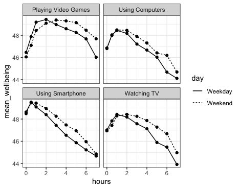

download.file("https://github.com/lu-psy-r/MSc/blob/main/PSYC412/part1/Week12-files/data_exp_72623-v17_questionnaire-i5jp.csv?raw=true", destfile = "data_exp_72623-v17_questionnaire-i5jp.csv")Week 12. Categorical predictors
Written by Margriet Groen (partly adapted from materials developed by the PsyTeachR team at the University of Glasgow)
So far, all the predictors in the models we’ve looked at were continuous variables. What if you wanted to know whether a response differed between two or more discrete groups? Hang on, you might say, that sounds like doing an ANOVA. True, you might have used ANOVA to assess whether group means differed in previous stats courses. ANOVAs—to some degree—are just a special type of regression where you have categorical predictors. This week we’ll look at how to model responses as a function of categorical predictors and we’ll combine categorical predictors to model how a predictor might affect the outcome variable differently across two different groups. For example, we might be interested in whether the amount of time adolescents use digital devices (screen-time) predicts their well-being. Additionally, we might want to know whether well-being is different for adolescent boys and girls and whether the relationship between screen-time and well-being differs for these two groups. By fitting a regression model in which we combine a continuous (screen-time) and a categorical (sex) predictor, we can do exactly that. We’ll be working on that in the lab.
Lectures
The lecture material for this week follows the recommended chapters in Winter (2020) – see under ‘Reading’ below – and is presented in two parts. The videos have captions, in case you find that helpful.
Tip
You’ll find links to the slides and transcripts underneath each video. You can also download them all at once here
- Categorical predictors (~17 min)
- Interactions (~18 min)
If you are (relatively) new to using R and RStudio and not yet confident in using various functions from the dplyr package, the video below will be useful:
- Data wrangling with dplyr (~10 minutes) Watch this part before you complete the pre-lab activities and before you attend the lab session.
Reading
Blogpost by Professor Dorothy Bishop
In this very short blogpost Professor Dorothy Bishop explains the links between ANOVA and Regression.
Winter (2020)
Chapter 7 provides an excellent overview of using categorical predictors in regression models and explains how this is implemented in R.
Chapter 8 explains what interactions are and how to model and interpret them.
Pre-lab activities
After having watched the lectures and read the textbook chapters you’ll be in a good position to try these activities. Completing them before you attend your lab session will help you to consolidate your learning and help move through the lab activities more smoothly.
Pre-lab activity 1: More data-wrangling in R
We’ll continue to practice data-wrangling in R. This week, we’ll work with some questionnaire data. You might have collected questionnaire data using Qualtrics, Pavlovia or Gorilla. The data we’ll be working with in this pre-lab activity were collected using the Gorilla platform. The questionnaire collects some demographic information. A data collection platform typically provides you with an output file that is quite complex. For instance, in addition to responses to the questions of interest, it will collect information on task name, task version, various time stamps and other information on the data collection session. To be able to do any statistics on the data, you’ll have to extract the relevant information from this larger data file. We can do this by using various functions from the dplyr package. This cheatsheet provides a useful overview.
Step 1: Background and set up
Set your working directory
Make sure you have set your working directory to the correct folder by right-clicking on it and selecting ‘Set as working directory’.
Empty the R environment
Before you do anything else, when starting a new analysis, it is a good idea to empty the R environment. This prevents objects and variables from previous analyses interfering with the current one. To do this, you can click on the little broom icon in the top right of the Environment pane, or you can use rm(list=ls()).
Before we can get started we need to tell R which libraries to use. For this analysis we’ll need tidyverse.
TASK: Load the relevant libraries. If you are unsure how to do that, you can look at the ‘Hint’ below for a clue by expanding it. After that, if you are still unsure, you can view the code by expanding the ‘Code’ section below.
Hint
Use the library() function.
Code
The code to do this is below.
library(tidyverse)
If you couldn’t upload files to the server, do this:
If you experienced difficulties with uploading a folder or a file to the server, you can use the code below to directly download the file you need in this lab activity to the server (instead of first downloading it to you computer and then uploading it to the server). Remember that you can copy the code to your clipboard by clicking on the ‘clipboard’ in the top right corner.
TASK: Read in the data file.
Hint
Use the read_csv() function.
Code
The code to do this is below.
demo <- read_csv("data_exp_72623-v17_questionnaire-i5jp.csv") Step 2: Have a look what is in this file
The first thing to do when developing an R-script to clean up data prior to data analysis is to have a look what is in the file and identify the rows and columns that you need.
TASK: View the data file. See whether you can identify which columns we need to extract the questionnaire responses. If you are unsure how to do that, you can look at the ‘Hint’ below for a clue by expanding it. After that, if you are still unsure, you can view the code by expanding the ‘Code’ section below.
Hint
You can use View() to open the file in a separate tab. You can also inspect the file by using the head() function to look at the first few rows or the glimpse() function to get an overview of all rows and columns. Type ?head or ?dplyr::glimpse in the Console to get more information about those functions.
Code
The code to do this is below:
View(demo) # Look at the data frames
head(demo)
glimpse(demo)You’ll find that the data file has 31 columns and 157 rows. The questionnaire responses are in the last column (Response). Additionally, we need information in the column Question Key to make sure we extract the labels associated with the responses. Finally, we need participant numbers (stored in Participant Private ID) to be able to link responses to a particular participant.
Step 3: Extract relevant columns and rows
TASK: Extract the columns
Participant Private ID,Question KeyandResponse, and assign the result to a new data frame.
Hint
Use the select() function.
Code
The code to do this is below:
select(`Participant Private ID`, `Question Key`, `Response`)You’ll see that the new data frame still has 157 observations or rows, but now we only have a much more manageable 3 variables or columns. If you scroll through the data file, you’ll see that the responses from different participants are in separate rows (meaning that the data are in ‘long’ format). You’ll also see that it separates different participants by rows with the text “BEGIN QUESTIONNAIRE” and “END QUESTIONNAIRE”. We need to get rid of those before we transform the data frame to a ‘wide’ format.
TASK: Extract all rows, except ones that have “BEGIN QUESTIONNAIRE” or “END QUESTIONNAIRE” in the column
Question Key.
Hint
Use the filter() function, in combination with the logical operator for ‘not’. See here for more info on logical operators.
Code
The code to do this is below:
filter(!`Question Key` == "BEGIN QUESTIONNAIRE")
filter(!`Question Key` == "END QUESTIONNAIRE")Step 4: Change the format from ‘long’ to ‘wide’
Now that we’ve cleaned up the column and rows, we want to change the format to wide to have a separate column for each question, and have one row per participant.
TASK: Change the format to wide.
Hint
Use the pivot_wider() function.
Code
The code to do this is below:
pivot_wider(names_from = `Question Key`, values_from = Response)Step 5: Rename variables
Have another look at the data frame. We now have separate columns for different questions such as participant number, age, gender etc. However, some of the columns have awkward names, consisting of multiple words (such as ‘Participant Private ID’). Let’s rename those to make it easier to work with. Also note that we have data for 10 participants. For the purpose of this exercise, we’ll focus on the variables age, gender, language background and handedness. So don’t worry about renaming the other ones.
TASK: Rename the variables that have multi-word names. Focus on age, gender, language background and handedness.
Hint
Use the rename() function.
Code
The code to do this is below:
rename(origID = `Participant Private ID`,
age = Age,
gender = Gender,
gender_text = `Gender-text`,
bilingual_text = `bilingual-text`,
handedness = categorical_hand) %>%Step 6: Extract variables
TASK: Extract the following variables: age, gender (as well the associated text variable), language background (as well as the associated text variable) and handedness.
Hint
Use the select() function.
Code
The code to do this is below:
select(origID, age, gender, gender_text, bilingual, bilingual_text, handedness)Step 7: Recode gender and bilingual
If you look at the gender variable, you’ll see that it has 3 levels: ‘Male’, ‘Female’ and ‘Other (please specify)’. There are 2 issues with this: 1) Male and female are labels associated with biological sex, rather than gender. These labels should be recoded to ‘Man’ and ‘Woman’; 2) The third label reads ‘Other (please specify)’. While a necessary part of the question, we don’t really want the ‘(please specify)’ part to show in tables and figures. We will want to recode that to just ‘Other’. Similarly, for the bilingual variable, we have ‘Yes. My strongest language is:’ and ‘No’. We will want to recode that to a simpler ‘Yes’ and ‘No’.
TASK: Recode the levels of the gender variable to ‘Man, ’Woman’ and ‘Other’, rather than ‘Male’, ‘Female and ’Other (please specify)’.
Hint 1
Use the recode() function, in combination with the mutate() function.
Hint 2
Try to fill in the template below:
mutate (new variable = recode(old variable,
`Old label1` = "New label1",
`Old label2` = "New label2",
`Old label3` = "New label3"))
Code
The code to do this is below:
mutate (gender = dplyr::recode(gender,
`Male` = "Man",
`Female` = "Woman",
`Other (please specify)` = "Other")) %>%
mutate(bilingual = dplyr::recode(bilingual,
`Yes. My strongest language is:` = "Yes"))Step 8: Change variable types
Something else to check at this stage is whether the variable types that R has automatically assigned to your variables are correct. An easy way to check what the variable type for each variable is, is by clicking on the white triangle in the blue circle next to the object name in the Environment. Using the glimpse() function will also show them. You will see that each variable is a ‘num’ (for ‘numerical’) or ‘chr’ (for ‘character’). Specifically, currently R thinks that the values stored in ‘origID’ are numerical values and that the values stored in all other variables are ‘character’ values (basically reading them as strings). This is not correct. Participant numbers, gender and bilingual are really factors with different levels (or categories) and the values in ‘age’ are numerical values. This is important, because certain functions expect variables of a certain type. For instance, you can’t compute the mean of a variable that consists of ‘characters’. So if you don’t change the variable types and try to compute the mean of ‘age’ it will not work. You can read more about variable types in R here.
TASK: Change the variable types for participant number (factor), age (numerical), gender (factor), and bilingual (factor). Note that the variables ‘gender_text’ and ‘bilingual_text’ indeed contain string information, so are correctly identified as ‘character’ variables.
Hint 1
Use the as.factor() and as.numeric() functions, in combination with the mutate() function.
Hint 2
Try to fill in the template below:
mutate(variable1 = as.factor(variable1),
variable2 = as.numeric(variable2),
variable3 = as.factor(variable3),
variable4 = as.factor(variable4))
Code
The code to do this is below:
mutate(origID = as.factor(origID),
age = as.numeric(age),
gender = as.factor(gender),
handedness = as.factor(handedness))Step 9: Save processed file
Now the data is in a much better shape to work with for data visualisation, combination with other data files and analysis. In my own work, I’d write a separate ‘cleaning’ script like this for each measure (questionnaire or experimental task) and store the cleaned data frame as a new data file. I can then easily read in those ‘cleaned’ data files when doing further visualisation or analysis, without having to touch the raw data files again.
TASK: Store the data frame that contains the ‘cleaned’ or ‘processed’ data.
Hint 1
Use the write_csv() function.
Code
The code to do this is below:
write_csv(demo_proc, ("Week12-files/demo_proc.csv"))
Tip
You can download the R-script that combines all these bits of code into 1 pipe here. It is always a good idea to build a pipe like this 1 line at a time. Make sure to check that each line actually does what you expect it to do before you add the next line.
Well done! The more you practise data wrangling, the easier it will become.
Pre-lab activity 2: Getting ready for the lab class
Get your files ready
Download the 412_week12_lab.zip file.
Remind yourself of how to access and work with the RStudio Server.
- Sign in to the RStudio Server. Note that when you are not on campus you need to log into the VPN first (look on the portal if you need more information about that).
- Create a new folder for this week’s work.
- Upload the zip-file to the folder you have created on the RStudio server. Note you can either upload a single file or a zip-file.
If you have difficulty uploading files to the server
If you get error messages when attempting to upload a file or a folder with files to the server, you can try the following steps:
- Close the R Studio server, close your browser and start afresh.
- Open the R Studio server in a different browser.
- Follow a work around where you use code to directly download the file to the server. The code to do that will be available at the start of the lab activity where you need that particular file. The code to download the file you need to complete the quiz is below.
Lab activities
In this lab, you’ll gain understanding of and practice with:
- when and why to apply multiple regression to answer questions in psychological science
- conducting multiple regression in R when combining continuous and categorical predictors
- interpreting the R output of multiple linear regression (when combining continuous and categorical predictors)
- reporting results for multiple linear regression (when combining continuous and categorical predictors), following APA guidelines
Lab activity 1: Combining a continuous and a categorical predictor in a regression model
Background: Smartphone screen-time and well-being
There is currently much debate (and hype) surrounding smartphones and their effects on well-being, especially with regard to children and teenagers. We’ll be looking at data from this recent study of English adolescents: Przybylski, A. & Weinstein, N. (2017). A Large-Scale Test of the Goldilocks Hypothesis. Psychological Science, 28, 204–215.
This was a large-scale study that found support for the “Goldilocks” hypothesis among adolescents: that there is a “just right” amount of screen-time, such that any amount more or less than this amount is associated with lower well-being. This was a huge survey study with data containing responses from over 120,000 participants! Fortunately, the authors made the data from this study openly available, which allows us to dig deeper into their results. And the question we want to expand on in this lab is whether the relationship between screen-time and well-being depends on the partcipant’s (self-reported) sex. In other words, our research question is: Does screen-time have a bigger impact on boys or girls, or is it the same for both?
The dependent measure used in the study was the Warwick-Edinburgh Mental Well-Being Scale (WEMWBS). This is a 14-item scale with 5 response categories, summed together to form a single score ranging from 14-70.
On Przybylski & Weinstein’s page for this study on the Open Science Framework, you can find the participant survey, which asks a large number of additional questions (see page 14 for the WEMWBS questions and pages 4-5 for the questions about screen-time). Within the same page you can also find the raw data, which some of you might want to consider using for your research report.
However, for the purpose of this lab, you will be using local pre-processed copies of the data (participant_info.csv, screen_time.csv and `wellbeing.csv, which you downloaded as part of the ‘Pre-lab activities’.
Przybylski and Weinstein looked at multiple measures of screen-time, but again for the interests of this lab we will be focusing on smartphone use, but do feel free to expand your skills after by looking at different definitions of screen-time. Overall, Przybylski and Weinstein suggested that decrements in well-being started to appear when respondents reported more than one hour of daily smartphone use. So, bringing it back to our additional variable of sex, our research question is now: Does the negative association between hours of smartphone use and well-being (beyond the one-hour point) differ for boys and girls?
Let’s think about this in terms of the variables. We have:
- a continuous outcome variable: well-being;
- a continuous∗ predictor variable: screen-time;
- a categorical predictor variable: sex.
Please note that well-being and screen-time are technically only quasi-continuous inasmuch as that only discrete values are possible. However, there are a sufficient number of discrete categories in our data that we can treat the data as effectively continuous.
Now, in terms of analysis, what we are effectively trying to do is to estimate two slopes relating screen-time to well-being, one for adolescent girls and one for adolescent boys, and then statistically compare these slopes. Sort of like running a correlation for boys, a correlation for girls, and comparing the two. Or alternatively, where you would run a regression (to estimate the slopes) but also one where you would need a t-test (to compare two groups). But the expressive power of regression allows us to do this all within a single model. Again, as we have seen building up to this lab, an independent groups t-test is just a special case of ordinary regression with a single categorical predictor; ANOVA is just a special case of regression where all predictors are categorical. But remember, although we can express any ANOVA design using regression, the converse is not true: we cannot express every regression design in ANOVA. As such people like regression, and the general linear model, as it allows us to have any combination of continuous and categorical predictors in the model. The only inconvenience with running ANOVA models as regression models is that you have to take care in how you numerically code the categorical predictors. We will use an approach called deviation coding which we will look at today later in this lab.
To complete this lab activity, you can use the R-script (402_wk12_labAct1_template.R) that you downloaded as part of the ‘Pre-lab activities’ as a template. Work through the activity below, adding relevant bits of code to your script as you go along.
Step 1: Background and set up
Set your working directory
The folder you were asked to download under ‘Pre-lab activity 3: Getting ready for the lab class’ contains the data files we’ll need. Make sure you have set your working directory to this folder by right-clicking on it and selecting ‘Set as working directory’.
Empty the R environment
Before you do anything else, when starting a new analysis, it is a good idea to empty the R environment. This prevents objects and variables from previous analyses interfering with the current one. To do this, you can click on the little broom icon in the top right of the Environment pane, or you can use rm(list=ls()).
Before we can get started we need to tell R which libraries to use. For this analysis we’ll need broom, car and tidyverse.
TASK: Load the relevant libraries. If you are unsure how to do that, you can look at the ‘Hint’ below for a clue by expanding it. After that, if you are still unsure, you can view the code by expanding the ‘Code’ section below.
Hint
Use the library() function.
Code
The code to do this is below.
library(broom)
library(car)
library(tidyverse)
If you couldn’t upload files to the server, do this:
If you experienced difficulties with uploading a folder or a file to the server, you can use the code below to directly download the file you need in this lab activity to the server (instead of first downloading it to you computer and then uploading it to the server). Remember that you can copy the code to your clipboard by clicking on the ‘clipboard’ in the top right corner.
download.file("https://github.com/mg78/2324_PSYC402/blob/main/data/week12/participant_info.csv?raw=true", destfile = "participant_info.csv")download.file("https://github.com/mg78/2324_PSYC402/blob/main/data/week12/screen_time.csv?raw=true", destfile = "screen_time.csv")download.file("https://github.com/mg78/2324_PSYC402/blob/main/data/week12/wellbeing.csv?raw=true", destfile = "wellbeing.csv")TASK: Finally, read in the three data files; call the participant info
pinfo; call the screen_time datascreenand the well-being datawellbeing.
Hint
Use the read_csv() function.
Code
The code to do this is below.
pinfo <- read_csv("participant_info.csv")
screen <- read_csv("screen_time.csv")
wellbeing <- read_csv("wellbeing.csv")Step 2: Checking the formatting
Given our research question and the information you have about the scores, provided above under ‘Background’ and from the OSF-webpage, is the data ready for use?
TASK: Add code to look at the first few lines of each data frame.
Hint
Use the head() function (or tail() function).
Code
The code to do this is below:
head(pinfo) # Look at the data frames
head(screen)
head(wellbeing)QUESTION 2a: In which table is the variable corresponding to sex located and what is this variable called?
The ‘source and analysis code.sps’ file in the ‘Data and Code’ section on the OSF-webpage tells us how they coded the sex variable: 0 = female indicator and 1 = male indicator. It is worth exploring the OSF-webpage, to get used to foraging other files for these kinds of information, as they are not always clearly explained in a codebook or README. file.
TASK: For ease, lets recode the sex variable to reflect word labels of ‘female’ and ‘male’. This doesn’t change the order: R will still see female as 0, and male as 1 because female occurs before male in the alphabet. Make sure to check your code does what you expect it to do.
Hint
Use the recode() function from the dplyr package to recode the labels. Use the head() and tail() functions to check the new data frame.
Code
The code to do this is below:
pinfo <- pinfo %>%
mutate (sex = dplyr::recode(sex,
`1` = "male",
`0` = "female"))
# Let's check it has done it:
head(pinfo)
tail(pinfo)QUESTION 2b: In what format is the well-being data (long or wide)? On how many participants does it include observations? And on how many items for each participant?
QUESTION 2c: What is the name of the variable that identifies individual participants in this dataset? It is important to work this out as this variable will allow us to link information across the three data files.
Step 3: Data preparation - Aggregating the total well-being scores
We need to sum the 14 items of the well-being scale for each participant to create one well-being score per participant.
TASK: To create one well-being score per participant, add code to the script to do the following: first, transform the
well-beingdata frame from wide to long (usingpivot_longer()); then, usegroup_by()to get scores for each participant and finally usesummarise()to calculate a total well-being score, calling the new variabletot_wellbeing. Save all of this to an object calledwb_tot.
Hint
Below is a code template. Make sure to add the relevant sections.
wb_tot <- DATA %>%
pivot_longer(-Serial, names_to = "", values_to = "") %>%
group_by(?) %>%
summarise(tot_wellbeing = sum(?))
Code
wb_tot <- wellbeing %>%
pivot_longer(-Serial, names_to = "question", values_to = "score") %>%
group_by(Serial) %>%
summarise(tot_wellbeing = sum(score))It is useful to calculate some descriptive statistics for the new variable tot_wellbeing.
TASK: Calculate some descriptive statistics for
tot_wellbeing.
Hint
Use summarise() to calculate the mean, standard deviation, minimum and maximum values.
Code
wb_tot %>% summarise(mean = mean(tot_wellbeing),
sd = sd(tot_wellbeing),
min = min(tot_wellbeing),
max = max(tot_wellbeing))Finally, let’s get an idea of the distribution of the new variable tot_wellbeing.
TASK: Visualise the distribution in a histogram.
Hint
Use ggplot() and geom_historgram().
Code
ggplot(wb_tot, aes(tot_wellbeing)) +
geom_histogram() QUESTION 3a: Is the distribution of well-being scores symmetrical, negatively skewed or positively skewed?
Step 4: Data preparation - Transforming screen time data
Great, so we have the well-being scores sorted out, we now need to think about the screen-time usage data and whether it is being used on a weekday or a weekend. As always, to get an idea of the data, it is often very useful to visualise the variables before proceeding with the analysis.
Before we can do this, we’ll need to tidy these data up. Have another look at the screen data by using the head() function. You’ll see that we have Serial in the first column (this is good), but in the following eight columns, we have columns for each type of activity (Comph, Comp, Smart, Watch) and the part of the week it took place (we and wk) combined. Instead, to be able to work with the data, we need two columns: one for the type of activity (we’ll call it variable) and one for the part of the week (we’ll call it day).
A second issue is that we need to alter the abbreviations Comph, Comp, Smart and Watch to reflect more descriptive text for each in plots.
Below are two chunks of code that represent these steps. In the next tasks you’ll practise with taking a set of piped commands apart. The purpose of this is to get you used to “parsing” the code at the right places so that when you see piped commands in other people’s code, you know how to break it down and find the relevant parts that you can use.
TASK: In the code chunk below we use the
separate()function to split the character strings already in the dataset. You know that with piped commands, there are chunks of code. Run the code first in its entirety and then pull each line apart to see how each function works on the data. Write a descriptive sentence for each function’s role in the command. Don’t forget to copy the chunk to your script and run it.
screen_long <- screen %>%
pivot_longer(-Serial, names_to = "var", values_to = "hours") %>%
separate(var, c("variable", "day"), "_")TASK: In the next code chunk we use the
dplyr::recode()function withmutate()to relabel the separated names into understandable names that will be clear in plots. Again, run the code first in its entirety and then pull each line apart to see how each function works on the data. Write a descriptive sentence for each function’s role in the command. Don’t forget to copy the chunk to your script and run it.
screen2 <- screen_long %>%
mutate(variable = dplyr::recode(variable,
"Watch" = "Watching TV",
"Comp" = "Playing Video Games",
"Comph" = "Using Computers",
"Smart" = "Using Smartphone"),
day = dplyr::recode(day,
"wk" = "Weekday",
"we" = "Weekend"))
Tip
The code above has a new feature: the dplyr::recode part. This syntax – using the double colon – happens when there are many versions of a function with the same name. You can imagine that a function called ‘recode’ is immensely useful at the data wrangling stage of analysis. By using the name of the package, a double set of colons, followed by a function name, you are ensuring that R uses a particular version of the function, at that point only. This avoids having two or more packages loaded in your environment that sometimes do not play nicely together!
To be able to monitor that your code is performing as you want it to, you need to have in your mind an idea of how the data should look at the end of a code chunk. So stop a moment and be clear, discuss with your lab-mates if you feel like it and answer the following question.
QUESTION 4a: What are the variables and the levels or conditions within each variable of screen2?
TASK:Now join
wb_totandscreen_2by participant and then group by the variables ‘variable’, ‘day’ and ‘hours’ and then calculate a ‘mean_wellbeing’ variable for each of the grouped levels. Save it in an object called ‘dat_means’.
Hint 1
Write separate lines of code for each action and then, when you know each of them works, reformat them as a piped command. You’ll need inner_join(), group_by() and summarise().
Hint 2
Below templates for separate lines of code for each action. You’ll need to replace the names of relevant data frames and variables.
joined <- inner_join(data1, data2, by=)
grouped <- group_by(data, var1, var2, var3)
means <- summarise(data, mean = mean(variable))
Code
Below the code for a piped command.
dat_means <- inner_join(wb_tot, screen2, "Serial") %>%
group_by(variable, day, hours) %>%
summarise(mean_wellbeing = mean(tot_wellbeing))TASK: Now check that you have an object that is 72 observations of 4 variables. You should have a mean wellbeing score for every level of the hours, over weekdays and weekends for each level of the four types of screen time (4 x 2 x 9)
Next, it is a good idea to visualise the mean well-being data as function of hours of screen-time for the different days (weekday vs. weekend) and types of screen (playing video games, using computers, using smartphone and watching tv). This is quite a complex graph. We’ll go through creating it step-by-step, but let’s first look at the end result:

Ok, that’s what we are working towards.
TASK: Below, a chunk of code is presented. It is your task to fill in the x and y variables.
Hint
Go back to the research question - which variable is for the x axis and for the y axis?
ggplot(dat_means, aes(x = , y = )) +
geom_line() +
geom_point() +
theme_bw()
Code
ggplot(dat_means, aes(x = hours, y = mean_wellbeing,)) +
geom_line() +
geom_point() +
theme_bw()QUESTION 4b: What research question does this plot describe? Is it appropriate for the levels within the data?
TASK: Now, let’s add a different linetype for each day (weekday vs. weekend). Fill in the blanks in the code below.
ggplot(dat_means, aes(x = , y = , linetype = )) +
geom_line() +
geom_point() +
theme_bw()
Code
ggplot(dat_means, aes(x = hours, y = mean_wellbeing, linetype = day)) +
geom_line() +
geom_point() +
theme_bw()QUESTION 4c: What research question does this plot describe? Is it appropriate for the levels within the data?
Still not quite there.
TASK: Fill in the blanks (for x, y and linetype) as before. Now have a good look at the code below. What has changed? Copy the code to your script and run it. Then, for each line write a sentence as a comment to describe its effect on the plot.
ggplot(dat_means, aes(x = , y = , linetype = )) +
geom_line() +
geom_point() +
facet_wrap(~variable, nrow = 2) +
theme_bw()
Code
ggplot(dat_means, aes(hours, mean_wellbeing, linetype = day)) + # plot 'hours' on the x-axis, 'mean_wellbeing' on the y-axis and use a different type of line for the levels of 'day'
geom_line() + # add a line
geom_point() + # add point data
facet_wrap(~variable, nrow = 2) + # plot separate plots for each level of 'variable'
theme_bw() # use the 'black and white' themeWe add the facet_wrap() function here. You can check the ?facet_wrap() help page for more information.
QUESTION 4d: c. What does the facet_wrap() function do? Is this plot appropriate for the levels in the data?
Step 5: Calculating mean hours per day for smartphone use, for each participant
As mentioned at the beginning, in today’s lab we’ll focus on smartphone use. So looking at the bottom left of the figure we could suggest that smartphone use of more than 1 hour per day is associated with increasingly negative well-being the longer screen time people have. This looks to be a similar effect for Weekdays and Weekends, though perhaps overall well-being in Weekdays is marginally lower than in Weekends (the line for Weekday is lower on the y-axis than Weekends). This makes some sense as people tend to be happier on Weekends!
TASK: Below is a set of comments that describe what the chunk of code that you need to write next does:
- #use ‘screen2’
- #and then filter out the observations for ‘Using Smartphone’,
- #and then group together each participant,
- #and then summarise the mean hours calling it ‘hours_per_day’,
- #save it in an object called ‘smarttot’
Hint
Below is a template for the code you need. Try to fill in the relevant bits:
NEW_OBJECT <- DATA %>%
filter(variable == "?") %>%
group_by(VARIABLE) %>%
summarise(new_measure = mean(VARIABLE))
Code
The code to do this is below:
smarttot <- screen2 %>% # use 'screen2'
filter(variable == "Using Smartphone") %>% # filter out the observations for 'Using Smartphone'
group_by(Serial) %>% # group together each participant
summarise(hours_per_day = mean(hours)) #summarise the mean hours calling it 'hours_per_day'TASK: Now let’s do it the other way around. Run the code below. Have a look at the structure of ‘smart_wb’.
Hint
You can use the str() function.
smart_wb <- smarttot %>%
filter(hours_per_day > 1) %>%
inner_join(wb_tot, "Serial") %>%
inner_join(pinfo, "Serial") %>%
mutate(sex = as.factor(sex))QUESTION 5a: What does the code do? Write a short paragraph, using the phrase “and then” to represent the pipes.
Step 6: More visualisation
We are now using only one small part of the data - smartphone use and its relationship with well-being over different durations of time. Before formally testing our research question, we can visualise the data and enquire about sex differences on the same plot - run each chunk of code below:
TASK To further group the data, copy the code below to your script and run it. Look at the ‘smart_wb_gen’ dataframe. What has the code above done? Write a couple of sentences of description.
smart_wb_gen <- smart_wb %>%
group_by(hours_per_day, sex) %>%
summarise(mean_wellbeing = mean(tot_wellbeing))TASK: Let’s visualise these data.
ggplot(smart_wb_gen, aes(hours_per_day, mean_wellbeing, color = sex)) +
geom_point() +
geom_smooth(method = "lm") +
scale_color_discrete(name = "Sex", labels = c("Girls", "Boys"))+
scale_x_continuous(name = "Total hours smartphone use") +
scale_y_continuous(name = "Mean well-being score") +
theme_bw()QUESTION 6a: Write an interpretation of the above plot in plain English.
Step 7: The regression model
In the steps 2 to 6 we’ve covered some pretty heavy-lifting data-wrangling. As it is so often the case that something like this is needed when working with real data, it is really important to practise this. However, to ensure you also spend time on fitting the regression model and interpreting the output, you can choose to use the data-file smart_wb.csv to get started with that. It contains the data in a format that is the result of all the data-wrangling we did in steps 2 to 6. So, download the smart_sb.csv data-file, put it in the folder that is your working directory and you’re all set for running the regression model.
If you couldn’t upload files to the server, do this:
If you experienced difficulties with uploading a folder or a file to the server, you can use the code below to directly download the file you need in this lab activity to the server (instead of first downloading it to you computer and then uploading it to the server). Remember that you can copy the code to your clipboard by clicking on the ‘clipboard’ in the top right corner.
download.file("https://github.com/mg78/2324_PSYC402/blob/main/data/week12/smart_wb.csv?raw=true", destfile = "smart_wb.csv")TASK: Let’s run the regression. Write code in your script in which you call your output ‘mod’, and use the data ‘smart_wb’ using the following formula,
lm(y ~ x1 + x2 + x1:x2, data)to construct your regression model. Go back to the research question for your outcome and two predictor variables.
Hint
Use the following template:
mod <- lm(y ~ x1 + x2 + x1:x2, data)
Code
mod <- lm(tot_wellbeing ~ hours_per_day + sex + hours_per_day:sex, smart_wb)TASK: Call and save the summary of your model as ‘mod_summary’; then have a look at it.
Code
mod_summary <- summary(mod)
mod_summaryLet’s first look at the model as a whole:
QUESTION 7a: What is the p-value for the overall model? Is it significant? What does this mean?
QUESTION 7b: To two decimal places, what percentage of the variance in well-being scores does the overall model explain?
Now, lets look at the coefficients of our predictors:
QUESTION 7c: Are the main effects of smartphone use and sex significant?
QUESTION 7d: Which variable indicates the interaction between smartphone use and sex?
QUESTION 7e: And is the interaction significant?
QUESTION 7f: What is the most reasonable interpretation of these results?
The above model uses treatment coding (sometimes called dummy coding), for the sex variable. In a categorical variable with only two levels this means that one level is coded as 0 and the other level is coded as 1. In categorical variables with more than two levels, it works slightly differently.
TASK: We can check that the sex variable is treatment with the following code:
contrasts(smart_wb$sex)Because we have not explicitly told R about the labels for the sex variable, it has used level 0 as the reference level, hidden within the intercept term and level sex1 describes the difference (or slope) between level 0 and 1 or in this dataset from female to male.
QUESTION 7g: Is being Male better for a person’s well-being in the context of smartphone use than being Female?
Now let’s look at deviation coding. There are other ways to code your categorical variables. One of them is deviation coding (also sometimes called sum coding). This effectively divides the difference of the values between your categorical levels by the number of levels so that each level can be compared to one intercept that is central to them all rather than comparing levels to one reference level. It is like centering for a categorical level.
TASK Use the code chunk below to: 1) Add a variable to the smart_wb data that is a deviation coding of sex; 2) Set the deviation coding (we’ll label it ‘Sum’ here for easy variable naming); and 3) Look at the output for the sum-coded sex variable.
smart_wb <- mutate(smart_wb, sexSum = sex) # add a variable to the smart_wb data that is a deviation coding of sex
contrasts(smart_wb$sexSum) <- contr.sum(2) # wet the deviation coding
contrasts(smart_wb$sexSum) # look at the output for the sum coded sex variableNext, we’ll run the regression again, using the sum-coded sex variable and we’ll compare the outputs.
# Run the regression model again, using the sumcoded sex model and compare outputs
mod_S <- lm(tot_wellbeing ~ hours_per_day + sexSum + hours_per_day:sexSum, smart_wb)
mod_S_summary <- summary(mod_S)
# Compare the two model summary outputs
mod_summary
mod_S_summary‘sexSum1’ is now the coefficient for sex and represents the change from the intercept value which now lies between the values for being Female and Male. Note how this coefficient is negative.
The earlier model had a positive coefficient because the intercept described the reference group of the Girls, who on average begin at a lower well-being level than Boys (refer back to the scatterplot to verify this). Because the sum-coding has moved the intercept to a point that is the center of the difference between Boys and Girls, sexSum1 now describes the distance between the centre and a level of Sex.
Values for well-being in Girls are thus: \[ Intercept + sexSum*+1 = 49.74 + (-1.61)*(+1) \]
Values for well-being in Boys are thus: \[Intercept + sexSum*-1 = 49.74 + (-1.61)*(-1)\]
with the Boys being higher in well-being…(remember a negative number multiplied by a negative number produces a positive number and a negative number multiplied by a positive number produces a negative number).
The interpretation of both model effects is the same, and if you look at the summary statistics, they are identical. Deviation coding effectively centers your categorical variables and helps with interpretation of interaction terms.
Step 8: Checking assumptions
Now that we’ve fit a model, let’s check whether it meets the assumptions of linearity, normality and homoscedasticity. With regression models, you do this after you’ve actually fit the model.
Linearity Unlike when we did simple regression we can’t use crPlots() to test for linearity when there is an interaction, but we know from looking at the grouped scatterplot that this assumption has been met.
Normality Normally we would test for normality with a QQ-plot and a Shapiro-Wilk test. However, because this dataset is so large, the Shapiro-Wilk is not appropriate (if you try to run the test it will produce a warning telling you that the sample size must be between 3 and 5000). This is because with extremely large sample sizes the Shapiro-Wilk test will find that any deviation from normality is significant. Therefore we should judge normality based upon the QQ-plot.
TASK: Create a QQ-plot to check the residuals are normally distributed.
Hint
You can use the qqPlot() function. The residuals are stored in the ‘mod’ object you created earlier.
Code
qqPlot(mod$residuals)QUESTION 8a: What do you conclude from the QQ-plot?
Homoscedasticity Here we have the same problem as with testing for normality: with such a large sample the ncvTest() will produce a significant result for any deviation from homoscedasticity. So we need to rely on plots again. To check for homoscedasticity we can use plot() from Base R that will produce a bunch of helpful plots (more information here:.
TASK: Copy the code chunk below to your script and run it.
par(mfrow=c(2,2)) # 4 charts in 1 panel
plot(mod) # this may take a few seconds to runThe residuals vs leverage plot shows a flat red line so, whilst it isn’t perfect, we can assume that with such a large sample size regression is still an appropriate analysis.
Multi-collinearity Finally, lets check for multicollinearity using the vif() function. Essentially, this function estimates how much the variance of a coefficient is “inflated” because of linear dependence with other predictors, i.e., that a predictor isn’t actually adding any unique variance to the model, it’s just really strongly related to other predictors. Thankfully, vif is not affected by large samples like the other tests. There are various rules of thumb, but most converge on a VIF of above 2 to 2.5 for any one predictor being problematic.
TASK: Copy the code chunk below to your script and run it.
vif(mod) # Check for multi-collinearityQUESTION 8b: Do any of the predictors show evidence of multicollinearity?
Step 9: Write up
QUESTION 9a: How would you write up the results following APA guidance? You can choose whether you do so for the model using treatment coding or for the model using deviation coding.
Answers
When you have completed all of the lab content, you may want to check your answers with our completed version of the script for this week. Remember, looking at this script (studying/revising it) does not replace the process of working through the lab activities, trying them out for yourself, getting stuck, asking questions, finding solutions, adding your own comments, etc. Actively engaging with the material is the way to learn these analysis skills, not by looking at someone else’s completed code…
You can download the R-script that includes the relevant code here: 412_wk12_labAct1_withAnswers.R.
Lab activity 1: Combining a continuous and a categorical predictor in a regression model
2a. In which table is the variable corresponding to sex located and what is this variable called? In pinfo; the variable is called sex.
2b. In what format is the well-being data (long or wide)? On how many participants does it include observations? And on how many items for each participant? The well-being data are in ‘wide’ format. It contains observations on 102580 participants, on 14 items.
2c. What is the name of the variable that identifies individual participants in this dataset? It is important to work this out as this variable will allow us to link information across the three data files. Serial
3a. Is the distribution of well-being scores symmetrical, negatively skewed or positively skewed? Negatively skewed
4a. What are the variables and the levels or conditions within each variable of screen2?
Participants plus: Levels: variables = 4: watching tv, playing video games, using computers, using smartphone day = 2 = weekdays, weekends hours = 9 = 0, 0.5, 1 - 7
4b. What research question does this plot describe? Is it appropriate for the levels within the data? The plot describes how hours of use impact upon well-being? No, it is too broad a research question.
4c. What research question would fit this visualisation?Is it appropriate for the levels in the data? The hours are now displayed by weekdays and weekends. How do hours of screen time impact on well-being on weekdays and at the weekend? No, it is still too broad.
4d. What does the facet_wrap() function do? Is this plot appropriate for the levels in the data? The facet_wrap() function has split the types of screen time and shown how hours of use across weekdays and weekends impact upon well-being. This captures the levels of information within the dataset.
5a. See the script
6a. Write an interpretation of the above plot in plain English. Something along the lines of: Adolescent girls show lower overall well-being compared to adolescent boys. In addition, the slope for girls appears more negative than that for boys; the one for boys appears relatively flat. This suggests that the negative association between well-being and smartphone use is stronger for girls.
7a. What is the p-value for the overall model? Is it significant? What does this mean? The p-value for the overall model fit is < 2.2e-16. This significant. It means that together the predictors describe the variance in well-being better than a model without the predictors (the null model). So knowing something about smartphone use and sex of participants will allow us to predict their well-being to a degree.
7b. To two decimal places, what percentage of the variance in well-being scores does the overall model explain? 9.38%
7c. Are the main effects of smartphone use and sex significant? Yes.
7d. Which variable indicates the interaction between smartphone use and sex? The interaction is indicated by the variable hours_per_day:sex.
7e. And is the interaction significant? Yes.
7f. What is the most reasonable interpretation of these results? Smartphone use was more negatively associated with well-being for girls than for boys.
7g. Is being Male better for a person’s well-being in the context of smartphone use than being Female? Yes.
8a. What do you conclude from the QQ-plot? The residuals are normally distributed.
8b. Do any of the predictors show evidence of multicollinearity? Yes, Boys and the interaction do. We’ll talk about that more, later in the module.
- Write up
Treatment / dummy coded model Treatment coding was used for categorical predictors with the Girls level acting as the reference group. The results of the regression indicated that the model significantly predicted well-being (F(3, 71029) = 2450.89, p < .001, Adjusted R2 = 0.09), accounting for 9% of the variance.Total hours of smart phone use was a significant negative predictor of well-being scores (β = -0.77, p < .001, as was sex (β = 3.22, p < .001), with girls having lower well-being scores than boys. Importantly, there was a significant interaction between screen time and sex (β = 0.45, p < .001): smartphone use was more negatively associated with well-being for girls than for boys.
Deviation / sum coded model Deviation coding was used for categorical predictors. The results of the regression indicated that the model significantly predicted well-being (F(3, 71029) = 2450.89, p < .001, Adjusted R2 = 0.09), accounting for 9% of the variance. Total hours of smart phone use was a significant negative predictor of well-being scores (β = -0.55, p < .001, as was sex (β = -1.61, p < .001), with girls having lower well-being scores than boys. Importantly, there was a significant interaction between screen time and sex (β = -0.22, p < .001), indicating that smartphone use was more negatively associated with well-being for girls than for boys.